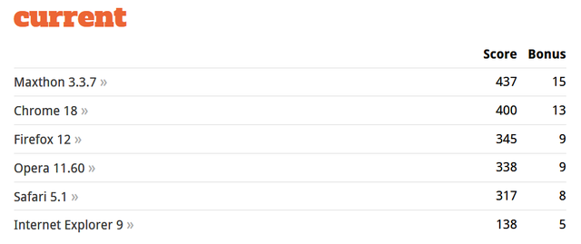

HTML son las siglas de Hyper-text Markup Language (Lenguaje de hiper-texto marcado). Es un lenguaje informático para describir un documento; y es una de las columnas vertebrales de la Internet moderna. Prácticamente todo el contenido que consumimos de la web se nos presenta usando HTML.
A día de hoy HTML no tiene capacidad para reproducir contenidos multimedia, como audio o vídeo, sin un complemento (un "plug-in") como los de Adobe® Flash® o Microsoft® Silverlight®. HTML tampoco tiene capacidad para almacenar datos en el ordenador del usuario, esto se hace actualmente mediante un lenguaje de scripting o con alguna otra tecnología. No existe un formato de dibujo nativo en HTML.
Los gráficos y animaciones se ofrecen en estos momentos en forma de archivos de imágenes o con la ayuda de otros complementos (Adobe Flash, Java, Microsoft Silverlight u otros). En general, cada vez más gente depende de la web y utiliza aplicaciones web y las expectativas que se generan alrededor de lo que puede (o podría) hacer una página web van creciendo día tras día.
Esta demanda de los usuarios en favor de un mayor rendimiento y unos sitios web con prestaciones más avanzadas y completas se ve limitada por el lenguaje HTML que se utiliza actualmente.
Principales caracterisitcas de html
- * Lenguaje estatico
- * Basado en etiquetas
- * El estandar lo define el W3C
- * Interpretadp
- * Extensiones de archivos html o htm

Una API (Application Program Interface) es una Interfaz de Programación de Aplicaciones.
Al igual que utilizamos interfaces gráficas para interaccionar con nuestro navegador o procesador de texto, pulsando botones o seleccionando opciones de menú, una API implementa ese tipo de comunicación, pero entre aplicaciones.
En vez de una interfaz ‘usuario-aplicación’, una API implementa una interfaz ‘aplicación-aplicación’, lo que permite automatizar esa interacción mediante programas o scripts
De hecho, la capacidad de interaccionar con JavaScript con el navegador o la página web son básicamente APIs, conformadas por objetos con una serie de métodos y propiedades que son accesibles por nuestros programas para manipularlos u obtener información de ellos. Por ejemplo, el objeto ‘document‘ implementa el DOM (Document Object Model), que no es sino una API que nos permite interaccionar con todos los elementos del documento o página HTML, exponiendo (haciendo accesibles) una serie de métodos que podemos llamar desde JavaScript.
Algunas API HTML5
Como hemos dicho, son numerosas las API que introduce HTML5, aunque es cierto que algunas que asociamos a este estándar no son parte de la especificación oficial. En cualquier caso sigue utilizándose como denominación genérica para todas ellas. Mencionaremos algunas para hacernos una idea del potencial que suponen para nuestras páginas Web.
Compatibilidad de navegadores con HTML5
No todas las características que ofrecen HTML5 y CSS3 son admitidas por los navegadores web actuales. Por tanto, es necesario consultar algunas páginas de referencia para conocer qué elementos se pueden utilizar porque son admitidos por la mayoría de los navegadores, y qué elementos no se pueden utilizar porque no funcionarán.
Tabla de comparativa de navegadores y su compatibilidad con HTML5:
